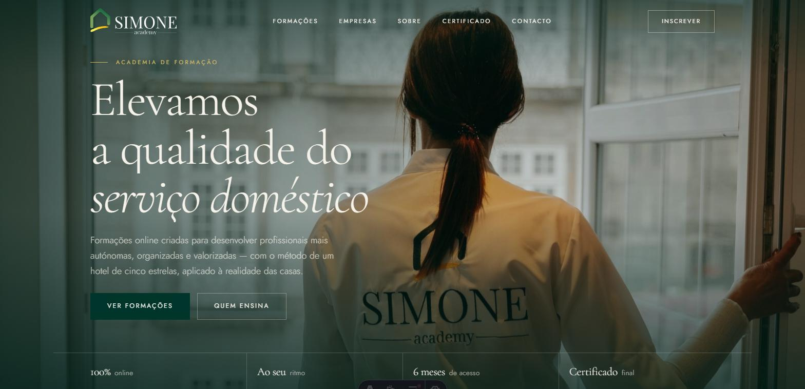
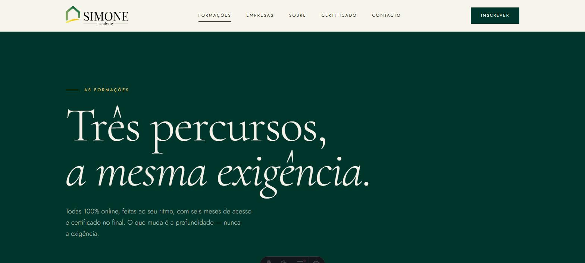
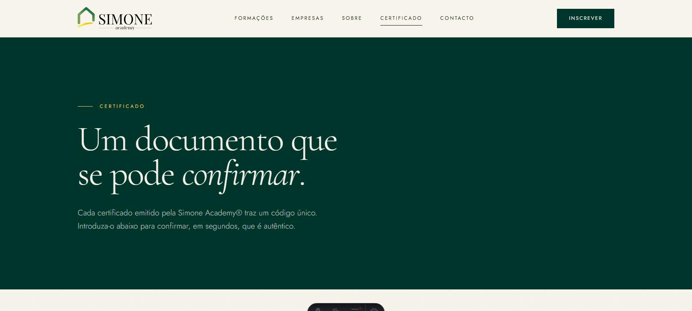
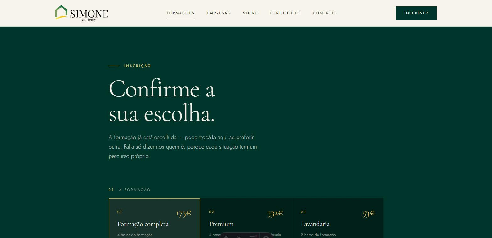

Marca, site e fluxo de inscrição para uma academia de formação online certificada em limpeza, organização e lavandaria — desenhados e construídos de ponta a ponta.

A Simone Academy ensina limpeza, organização e lavandaria a profissionais do lar, com o método da hotelaria de cinco estrelas aplicado à realidade das casas particulares. Formação séria, com certificado, num setor onde quase toda a aprendizagem acontece por imitação.
O problema de comunicação não era explicar o conteúdo. Era o estatuto. Vender formação a quem raramente se vê descrito como profissional obriga primeiro a tratá-lo como tal — e a maior parte da linguagem que existe neste setor faz o contrário.
Se o site parecer um catálogo de produtos de limpeza, a formação vale o que vale um produto de limpeza.
Daí a decisão que governa tudo o resto: uma serifada de editorial, muito espaço, fotografia documental e nem um único ícone de balde. O registo é o de uma escola, não o de um serviço.


:has(). Não é exibicionismo
técnico: é a garantia de que a página onde entra o dinheiro não parte por causa de um script
que falhou a carregar, de uma extensão do browser ou de uma ligação má. O caminho crítico não
depende de nada opcional.
A Simone Academy tem uma marca que trata a profissão como profissão, três percursos que se distinguem sem se desvalorizarem entre si, e um site que carrega depressa em telemóvel com dados móveis — que é como a maioria das alunas o vai abrir.
Estratégia, identidade, texto, interface e código vieram do mesmo sítio. Não houve agência, nem copywriter à parte, nem programador à espera de um ficheiro. É esse o argumento que este caso está mesmo a fazer.